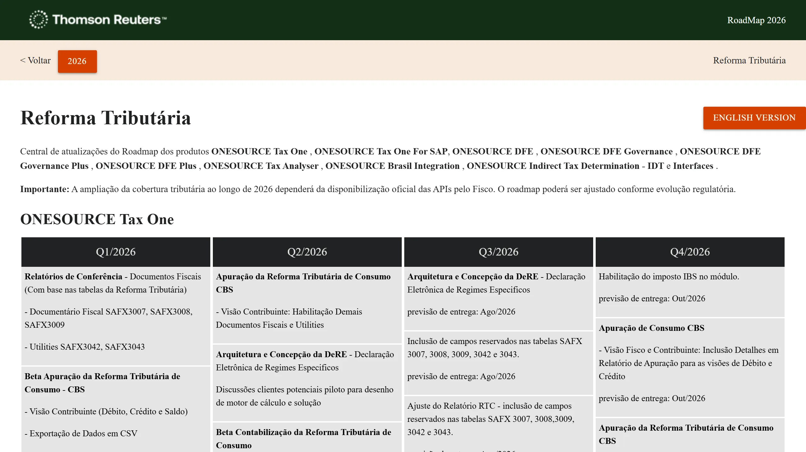

Quarters as the axis
Time is what all product lines have in common, and it’s how a regulatory change gets planned.
Thomson Reuters · Product roadmap · Proposal
I created this website in 2021, and it’s still live, sharing the product roadmap with customers. With Claude, I created a new proposal in 30 minutes and put it live.

The Tax Reform roadmap gathers 108 items across 11 product lines. The problem isn’t the amount of information, but the lack of hierarchy: everything carries the same weight.
The proposal organizes the content around the question people bring to it: what changes, and when? The four quarters of 2026 become the axis of the experience, with layers that go from the overview to the detail. It’s a concept proposal, not an official Thomson Reuters website.
Design decisions
Time is what all product lines have in common, and it’s how a regulatory change gets planned.
Year, map, product line and item: an overview doesn’t require going through the detail, and a specific search gets there faster.
The movement marks the passing of time and gives the content a rhythm. It isn’t just a visual effect.
It shows the size of the roadmap on one screen and links straight to each product line.
Each customer has a different interest, such as CBS or NFS-e, and the filters cut the content by that interest.
This reduces the visual load without removing content: the original text stays on the page.
Delivered, planned or no status is shown before the item is opened, because it’s a key part of the answer.
The home shows the whole structure and focuses the proposal on the densest area, the best test for the concept.
Colours, type, spacing and icons bring the roadmap closer to the Thomson Reuters Brazil website.
A switch in the header changes the language and keeps the current section, for customers who follow the roadmap in either language.
Text contrast was measured in both languages, on desktop and mobile, against the WCAG AA minimum, including active filters.
Publishing stays simple, and the text remains available even if the scripts fail.
Before & after
Move the divider to see both.

 Before · Current websiteAfter · Proposal
Before · Current websiteAfter · ProposalDrag horizontally, tap the comparison or use the arrow keys when the slider is focused.
External references
I used Claude to look for external references. We opened the tax software pages that publish their Tax Reform deliveries and compared them with the proposal.
| Page | Format | Strength | Weakness |
|---|---|---|---|
| Senior: Tax Reform in eDocs | FormatTimeline as an image, delivery table and FAQ | StrengthShows the Government’s timeline above Senior’s, and answers “What should I do?” | WeaknessOne page per product, and the timeline is only an image |
| Omie: general schedule | FormatHelp article with a list by date | StrengthA “Schedule Adjustments” block with recent changes and exact dates | WeaknessRunning text, with no filter or status |
| TOTVS: Datasul impacts and deliveries | FormatGrid of cards by module | StrengthSimple entry by module, such as Tax and Financial | WeaknessThe overview shows no schedule, and the detail is on other pages |
| Feature | Our proposal | Senior | Omie | TOTVS Datasul |
|---|---|---|---|---|
| Quarter view | Yes | No | No | No |
| Status visible on the item | Yes | Yes | No | No |
| Filters | Yes | No | No | No |
| Tax authority dependency shown | Yes | Yes | Yes | Yes |
| Direct link to each item | Yes | Not checked | Partial | Partial |
| Two languages | Yes | No | No | No |
| Text search | Yes | No | No | No |
| Last updated date | Yes | Yes | Yes | Not checked |
Observed in November 2026, on desktop, without logging in. “No” means I didn’t find it on that page, not that the company doesn’t offer it elsewhere.
The AI suggested improvements based on this comparison. I analyzed them and decided to implement three, which are now in the proposal.
In a regulatory roadmap, customers need to know whether the information is current.
A record of changed dates and statuses, with the reason, because tax authority deadlines move and customers plan around them. In this concept, the entries are marked as examples.
With 108 items, it helps people looking for a specific obligation, such as DeRE or NFS-e.
This proposal hasn’t been tested with users. The hypothesis is that customers will find what they need faster, and the next step would be to validate that with them.
The 30 minutes show the speed of exploration, not the time of a complete project. Validation, content review and font and photo licensing are still to come.
Opportunity
Today the website is static and someone has to update the data by hand. That’s 108 items across 11 product lines, with deadlines that move with the tax authority. When customers plan by the date, outdated data weighs as much as a confusing screen.
The hypothesis is that AI could take on the repetitive part of this work, connected to whichever project management tool the company uses.
AI connects to the company’s project management tool and reads how each item is progressing.
It compares that with what’s published and suggests what changed: status, date and reason, in Portuguese and English.
In a panel, the project manager approves, adjusts or moves an item to another quarter. Nothing goes live without that approval.
Approve, adjust or move a change. The website only updates after your approval.
Concept with example items, not real roadmap data. No tool is connected and the AI step is simulated.
The website stays static and simple to publish. What changes is the path to it: the last updated date and the change history would come from this flow.
This is still a hypothesis, not something built. It would need to confirm which tools are in use, how reliable their data is and how the panel fits into the team’s routine.
Try the experience
Created in 2021 and still live, sharing the product roadmap with customers.
Open the current websiteThe roadmap organized by quarter, with a map, search and filters, in Portuguese and English.
Open the proposal